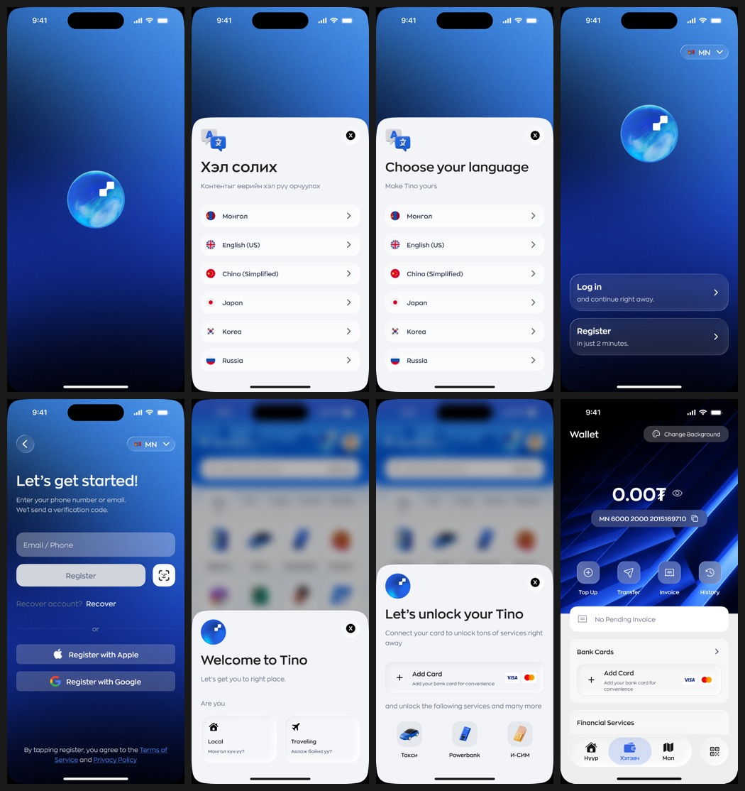
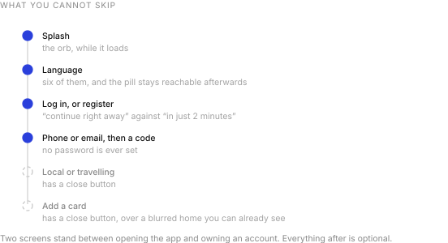
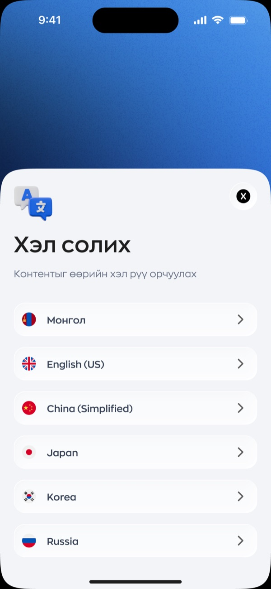
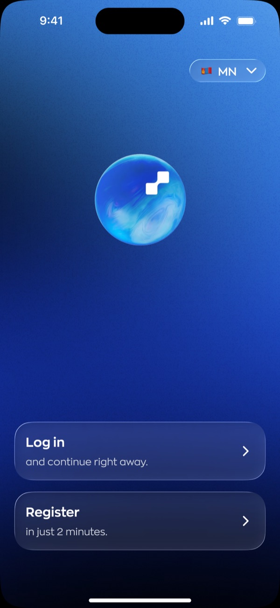
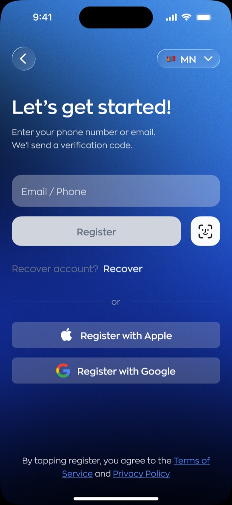
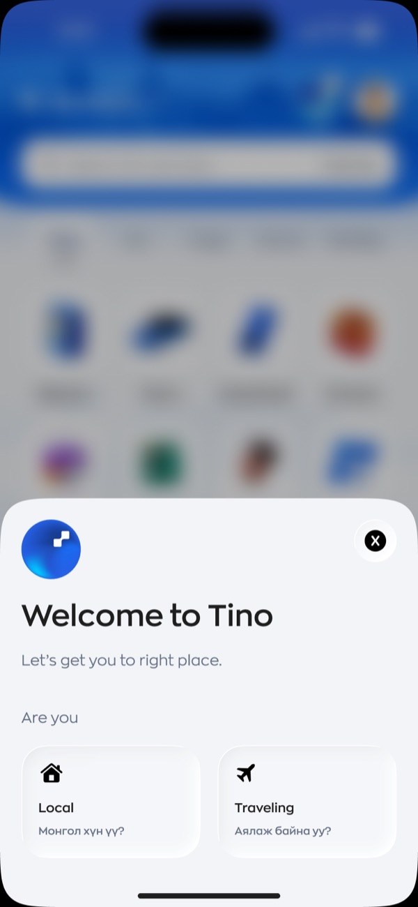
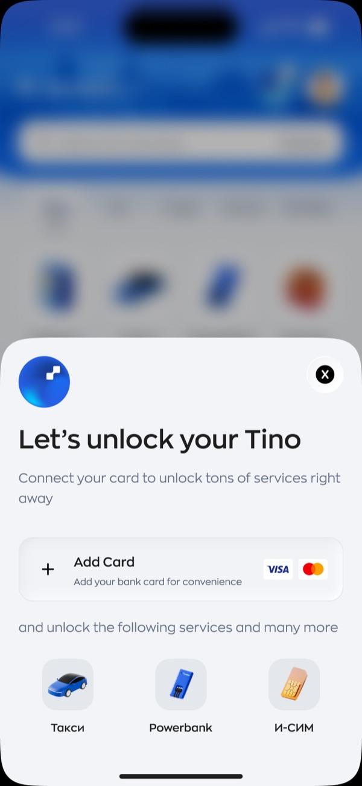

Tino onboarding improvement
2026
Eight screens between tapping a brand new app and having an account that works. I made four of them compulsory. The other four all carry a close button.1
Eight screens

What I fought for is how little of it is compulsory.

Language before anything else
I put the language sheet before the app asks who you are. Six options: Mongolian, English, Chinese, Japanese, Korean and Russian, which is a fair map of who actually lands in Ulaanbaatar and needs a taxi.
The part I care about more than the sheet is the pill. Once you pick, I keep a small flag and code in the top right of every screen that follows, and you can change your mind at any point. Language choice at the door is a trap if it is also a one way door, because the person most likely to pick wrong is the person least able to read their way back out.

Two doors, two promises

Most apps put Log in and Sign up side by side as equals and leave you to guess which is longer. I made the two cards say. Log in, and continue right away. Register, in just 2 minutes.
That second line is the same promise I put on Tino’s recruitment posters, where the headline is that two minutes is enough.2 Landing it on the actual screen is the point at which marketing stops being marketing and becomes a spec I have to meet.
No password anywhere

I took the password out of this flow entirely. One field takes a phone number or an email, a code arrives, and that is the account. No strength meter, no confirm field, no rule about symbols that nobody reads and everybody resents.
Three details I argued for. The single field accepts either input rather than making you pick a tab first. Recover account sits on the register screen, which is exactly where somebody who forgot they already had one will be standing. And consent is by action, worded as agreeing by tapping register, rather than a checkbox nobody has ever read.
Local or travelling


The welcome sheet asks one question. Are you local, or travelling. It is the same split I built into the new tino.mn landing page. I decided the audience divides that way and then held the line across the marketing site and the app, which is rarer than it should be.
Unlock, not set up
The card prompt is the most interesting screen in the flow, because it is the one the business needs most and the user needs least.
I framed it as unlocking rather than setting up. Connect a card, and it names the three things that turns on: taxi, powerbank, eSIM. Not a vague promise of full access. Three icons for three services you can go and use in the next ten minutes.
And it has a close button. The screen that makes the company money is the one screen here you can walk past. That took an argument, and I am glad I had it.
I kept the blurred home behind both sheets on purpose. You can see the grid of services sitting there, slightly out of focus, before you have handed over anything. It is a preview of the thing you are being asked to join.
- Design files rather than production screenshots. The balances, names and service icons are placeholder data.
- One of the recruitment posters in this set runs the headline that two minutes is all it takes. Same number, different surface, which is the only way a claim like that stays honest.